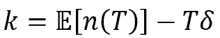

本程序主要实现的是一个机器学习中的一个自己设计搭建的集成学习器。通过对基学习器XGBoost进行Bagging，来实现一个在小样本上泛化性能较好，不易过拟合，准确性较高，且训练时间和开销较小的高效的学习器。这个学习器被应用于通过对一系列癌细胞的数据，包括癌细胞的radius、texture、area等，以及对应的label，即是否为恶性的，进行学习，从而得到一个model，可以用来判断一个未知的样本有更大可能是恶性还是良性。
集成学习(ensemble learning)通过构建并结合多个学习器来提升性能, Bagging是集成学习的一种，是一种个体学习器之间不存在强依赖关系，可以同时生成的并行化方法。
集成学习可以获得比单一学习器显著优越的泛化性能，这一点对弱学习器尤为明显。可以直观的理解为集成学习器是由很多基学习器得出的结果进行投票产生的，如果每个基学习器自身都有较大的可能判断正确，而它们判断的结果又相互独立，那么它们最后投票之后正确结果占多数的可能性就很大，于是最后投票的正确率也会很大。
可以就这一点进行简单的分析。考虑二分类问题，假设基分类器的错误率为：
假设集成通过简单投票法结合𝑇个分类器
假设基分类器的错误率相互独立，令𝑛(𝑇)表示𝑇个基分类器中对𝒙预测正确的个数, 若有超过半数的基分类器正确则分类就正确, 则有：
利用Hoeffding不等式：
可以得到以下推导：
另
从上面的推导可以看出，当基学习器之间判断相互独立，且准确性较高时，随着Bagging基分类器数目的增加，集成的错误率将指数级下降，最终趋向于0。值得注意的是，集成的错误率下降是有条件的，即基学习器之间要尽量做到独立，而且基学习器的准确性也要较好（至少明显好于瞎猜），也就是说需要好而不同，这就取决于基学习器的选取和构建了。这一点在后面对基学习器XGBoost的介绍中会有进一步说明。
Bagging的算法如下：
从中可以看出，算法是通过直接对基学习器的结果进行简单投票，取出最大的作为结果。我对这一点做出了改进，即不再使用简单投票，而是把每个样本在各个基学习器上的结果作为新的训练数据，输入到一个Logistic Regression学习器中，从而得出最后的结果。下面是我的程序的框图。
Logistic Regression即对率回归模型，本质上是一种线性模型。对率回归的优化目标函数如下：

本质上就是拟合：
可以看出相当于学习得到最好的加权求和，在这里就表现为通过学习得到最优的加权投票的权值w。这个权重的直观意义就是每个基学习器的判断能力不同，对于最后结果的贡献也不同，权重就代表基学习器对于最后的结果的贡献。这样可以提高预测的准确性。
XGBoost是陈天奇于2015年XGBoost: A Scalable Tree Boosting System论文中提出的一种Boosting的学习方法，这种方法是对梯度提升算法的改进，求解损失函数极值时使用了牛顿法，将损失函数泰勒展开到二阶，另外损失函数中加入了正则化项，是一种表现非常优异的算法。其官方的库底层由C++实现，而我使用Python的科学计算库numpy对该算法进行了复现。
XGBoostXGBoost是由k个基模型组成的一个加法模型，假设我们第t次迭代要训练的树模型是ft(x)，则有：
在学习第t个基模型时，XGBoost 要优化的目标函数为：
由于本次判断癌细胞的性质的问题是一个二分类问题，所以loss函数是：
泰勒展开，得到：
其中，
此时的优化目标变为：
去掉对于优化无关的常量之后，得到：
我的XGBoost的基学习器是决策树，所以还要推导出决策树的算法。
我们对于某一棵决策树，他的惩罚为：
所以，我们在树的结构确定时，可以做如下优化：
简记：
于是有：
可以推出树的最优叶节点值为：

假设模型在某一节点完成特征分裂，分裂前的目标函数可以写为：
分裂后的目标函数为：
则对于目标函数来说，分裂后的收益为：
从而得出决策树节点分裂的伪代码为：
XGBoost的模型对于数据的偏差非常小，可以高度拟合数据，但如果仅仅训练多个XGBoost模型参与Bagging不可避免地会让XGBoost模型之间相似性较高，并不独立，从而无法发挥Bagging的优势。为了让每个XGBoost基学习器之间有差异而且不过分影响基学习器性能，我设计了随机属性采样的方法，即在每个XGBoost学习器开始训练之前，先用random的方法随机选取样本属性中的几个，然后只针对这几个属性对XGBoost进行训练，从而让XGBoost基学习器达到好而不同的效果。这也是我针对癌细胞属性较多这个特点做出的选择。
计算机技术特别是机器学习的发展给许多领域带来了新的可能，而机器学习在医疗领域的应用给疾病的诊断带来了很大的便捷。对于大量的数据，人工判断很可能失误，而且效率低下，而通过机器学习利用之前的样本训练出准确性较高的模型之后，就可以在一定程度上辅助这种诊断的过程。
由于部分疾病的样本数据是有限的，训练数据量可能较小，而对于小样本训练很可能把样本自身的属性当作泛化的特征学习到模型中，从而导致过拟合。本次我实现的XGBoost_Bagging是对于适应小样本的模型的一个探索，创造性地把Bagging和Boosting两种集成学习方法结合起来，综合了Boosting降低偏差和Bagging降低方差的特点，在有限的数据集上获得了较高的准确性，证明了这种方式的潜力，在癌症诊断以及其他小样本、精度要求高的应用中有较大的现实意义。
程序的目录和文件组织形式如下。
Bagging类如下
class Bagging(object):
def __init__(self, n_estimator=10, attributeRate=0.5, train=True, model_path=None, sample_list_path=None,
logistic_path=None, w_train=True):
# number of base estimators
self.n_estimator = n_estimator
# to randomly select attributes
self.sample_lists = []
# models of base estimators
self.models = []
# logistic estimator used to predict result with result from base estimators
self.logistic = None
# the rate of attributes selected randomly
self.attributeRate = attributeRate
# whether train base estimators or use saved model
self.train = train
# whether the voting model need to be trained
self.w_train = w_train
# paths to model of base estimators, sample list, and voting model
self.model_path = model_path
self.sample_list_path = sample_list_path
self.logistic_path = logistic_path
# get models
if self.train is False and os.path.exists(self.model_path) and os.path.exists(self.sample_list_path):
with open(self.model_path, 'rb') as file:
self.models = pickle.load(file)
with open(self.sample_list_path, 'rb') as file:
self.sample_lists = pickle.load(file)
if self.w_train is False and os.path.exists(self.logistic_path):
with open(self.logistic_path, 'rb') as file:
self.logistic = pickle.load(file)
def fit(self, X, y, rate):
"""train model"""
# split train set (some for base estimator, some for voting model)
l = X.shape[0]
l1 = int(l * rate) # rate is the percentage of data used in training base estimators
X0 = X[l1:]
y0 = y[l1:]
X = X[:l1]
y = y[:l1]
if self.train is True:
for i in range(self.n_estimator):
# randomly select some attributes (attributeRate of total)
sample_num = int(self.attributeRate * X.shape[1])
sample_list = [i for i in range(X.shape[1])]
sample_list = random.sample(sample_list, sample_num)
print(sample_list)
self.sample_lists.append(sample_list)
# train models of base estimator
X1 = X[:, sample_list]
model = XGBoost(n_trees=20, depth=5, min_impurity=1e-7, tol=1, lam=30)
model.fit(X1, y)
self.models.append(model)
# save model
modelsFile = "../model/{}_{}_models.pkl".format(self.n_estimator, int(self.attributeRate * 10))
sampleListsFile = "../model/{}_{}_sampleLists.pkl".format(self.n_estimator, int(self.attributeRate * 10))
with open(modelsFile, "wb") as file:
pickle.dump(self.models, file)
with open(sampleListsFile, "wb") as file:
pickle.dump(self.sample_lists, file)
if self.w_train is True:
# train voting model
self.logistic = self.fit_w(X0, y0)
logisticFile = "../model/{}_{}_logistic.pkl".format(self.n_estimator, int(self.attributeRate * 10))
with open(logisticFile, "wb") as file:
pickle.dump(self.logistic, file)
def fit_w(self, X, y):
"""train voting model"""
y1 = []
# make the result of n base estimators into new attributes
for i in range(self.n_estimator):
sample_list = self.sample_lists[i]
X1 = X[:, sample_list]
model = self.models[i]
y_pred = model.predict(X1)
y1.append(y_pred)
y1 = np.array(y1)
print("y1_shape:", y1.shape)
y1 = y1.transpose()
print("y1_shape:", y1.shape)
# voting model is logistic regression
model = LogisticRegression()
model.fit(y1, y)
return model
def predict(self, X):
"""predict result"""
y1 = []
print("sample_lists_size:", len(self.sample_lists))
print("model_size:", len(self.models))
# make the result of n base estimators into new attributes
for i in range(self.n_estimator):
sample_list = self.sample_lists[i]
X1 = X[:, sample_list]
model = self.models[i]
y_pred = model.predict(X1)
print(y_pred)
y1.append(y_pred)
y1 = np.array(y1)
print("y1_shape:", y1.shape)
y1 = y1.transpose()
print("y1_shape:", y1.shape)
y = self.logistic.predict(y1)
return y其中fit函数是用来训练的，fit_w是用来训练投票权重的，predict用来测试。train用来标记是否训练，如果True则训练，如果为False则使用已有模型。train_w对应w的训练，同理
import numpy as np
def divide_on_feature(X, feature_i, threshold):
"""divide by feature threshold"""
X_1 = np.array([sample for sample in X if sample[feature_i] <= threshold])
X_2 = np.array([sample for sample in X if sample[feature_i] > threshold])
return X_1, X_2
class XGBoostTreeNode:
def __init__(self, feature_i=None, threshold=None,
value=None, right_branch=None, left_branch=None):
self.feature_i = feature_i
self.threshold = threshold
self.value = value
self.right_branch = right_branch
self.left_branch = left_branch
class Sigmoid:
"""sigmoid function class"""
def __call__(self, x):
return 1 / (1 + np.exp(-x))
def gradient(self, x):
return self.__call__(x) * (1 - self.__call__(x))
class LogisticLoss:
"""logistic loss"""
def __init__(self):
sigmoid = Sigmoid()
self._func = sigmoid
self._grad = sigmoid.gradient
def loss(self, y, y_pred):
y_pred = np.clip(y_pred, 1e-15, 1 - 1e-15)
p = self._func(y_pred)
return y * np.log(p) + (1 - y) * np.log(1 - p)
def gradient(self, y, y_pred):
p = self._func(y_pred)
return -(y - p)
def hess(self, y, y_pred):
p = self._func(y_pred)
return p * (1 - p)
class XGBoostRegressionTree(object):
"""XGBoost Regression Tree"""
def __init__(self, min_samples_split=2, min_impurity=1e-7,
tree_depth=float("inf"), loss=None, lam=None):
self.root = None
self.min_samples_split = min_samples_split
self.min_impurity = min_impurity
self.tree_depth = tree_depth
self.loss = loss
self.lam = lam
def split_y(self, y):
"""split y"""
col = int(np.shape(y)[1] / 2)
y, y_pred = y[:, :col], y[:, col:]
return y, y_pred
def gain(self, y, y_pred):
"""gain of a split"""
nominator = np.power((self.loss.gradient(y, y_pred)).sum(), 2)
denominator = self.loss.hess(y, y_pred).sum()
return 0.5 * (nominator / denominator + self.lam)
def gain_by_taylor(self, y, y1, y2):
"""total gain"""
y, y_pred = self.split_y(y)
y1, y1_pred = self.split_y(y1)
y2, y2_pred = self.split_y(y2)
true_gain = self.gain(y1, y1_pred)
false_gain = self.gain(y2, y2_pred)
gain = self.gain(y, y_pred)
return true_gain + false_gain - gain
def approximate_update(self, y):
"""produce leaf value"""
y, y_pred = self.split_y(y)
gradient = np.sum(self.loss.gradient(y, y_pred), axis=0)
hessian = np.sum(self.loss.hess(y, y_pred), axis=0)
update_approximation = - gradient / (hessian + self.lam)
return update_approximation
def fit(self, X, y):
"""train model"""
self.root = self._build_tree(X, y)
self.loss = None
def _build_tree(self, X, y, current_depth=0):
"""build tree"""
largest_impurity = 0
best_criteria = None
best_sets = None
Xy = np.concatenate((X, y), axis=1)
n_samples, n_features = np.shape(X)
if n_samples >= self.min_samples_split and current_depth <= self.tree_depth:
for feature_i in range(n_features):
feature_values = np.expand_dims(X[:, feature_i], axis=1)
unique_values = np.unique(feature_values)
unique_values.sort()
for i in range(len(unique_values) - 1):
threshold = (unique_values[i] + unique_values[i + 1]) / 2
Xy1, Xy2 = divide_on_feature(Xy, feature_i, threshold)
if len(Xy1) > 0 and len(Xy2) > 0:
y1 = Xy1[:, n_features:]
y2 = Xy2[:, n_features:]
impurity = self.gain_by_taylor(y, y1, y2)
if impurity > largest_impurity:
largest_impurity = impurity
best_criteria = {"feature_i": feature_i, "threshold": threshold}
best_sets = {
"leftX": Xy1[:, :n_features],
"lefty": Xy1[:, n_features:],
"rightX": Xy2[:, :n_features],
"righty": Xy2[:, n_features:]
}
# print("impurity:", largest_impurity)
if largest_impurity > self.min_impurity:
right_branch = self._build_tree(best_sets["rightX"], best_sets["righty"], current_depth + 1)
left_branch = self._build_tree(best_sets["leftX"], best_sets["lefty"], current_depth + 1)
return XGBoostTreeNode(feature_i=best_criteria["feature_i"], threshold=best_criteria[
"threshold"], right_branch=right_branch, left_branch=left_branch)
leaf_value = self.approximate_update(y)
return XGBoostTreeNode(value=leaf_value)
def predict_value(self, x, tree=None):
if tree is None:
tree = self.root
if tree.value is not None:
return tree.value
feature_value = x[tree.feature_i]
if feature_value <= tree.threshold:
branch = tree.left_branch
else:
branch = tree.right_branch
return self.predict_value(x, branch)
def predict(self, X):
y_pred = []
for x in X:
y_pred.append(self.predict_value(x))
return y_pred
class XGBoost(object):
"""XGBoost class"""
def __init__(self, n_trees=300, tol=0.01, min_split_n=2,
min_impurity=1e-7, depth=2, lam=1):
self.n_trees = n_trees
self.tol = tol
self.min_split_n = min_split_n
self.min_impurity = min_impurity
self.depth = depth
self.loss = LogisticLoss()
self.trees = []
self.lam=lam
for _ in range(n_trees):
tree = XGBoostRegressionTree(
min_samples_split=self.min_split_n,
min_impurity=min_impurity,
tree_depth=self.depth,
loss=self.loss,
lam=self.lam
)
self.trees.append(tree)
def fit(self, X, y):
"""train model"""
m = X.shape[0]
y = np.reshape(y, (m, -1))
y_pred = np.zeros(np.shape(y))
losses = []
for i in range(self.n_trees):
tree = self.trees[i]
y_and_pred = np.concatenate((y, y_pred), axis=1)
tree.fit(X, y_and_pred)
update_pred = tree.predict(X)
update_pred = np.reshape(update_pred, (m, -1))
y_pred += update_pred * self.tol
loss = np.sum(self.loss.loss(y, y_pred))
losses.append(loss)
print(losses)
def predict(self, X):
"""predict test set"""
y_pred = None
m = X.shape[0]
for tree in self.trees:
update_pred = tree.predict(X)
update_pred = np.reshape(update_pred, (m, -1))
if y_pred is None:
y_pred = np.zeros_like(update_pred)
y_pred += self.tol * update_pred
y_pred = y_pred.flatten()
y_pred[y_pred < 0.5] = 0
y_pred[y_pred > 0.5] = 1
return y_pred
其中XGBoost类调用XGBoostTreeNode类作为基学习器，LogisticLoss类用于提供loss的一阶和二阶导的计算。
import numpy as np
class LogisticRegression:
def __init__(self, penalty="l2"):
self.w = None
err_msg = "penalty must be 'l1' or 'l2', but got: {}".format(penalty)
assert penalty in ["l2", "l1"], err_msg
def sigmoid(self, x):
"""The logistic sigmoid function"""
return 1 / (1 + np.exp(-x))
def fit(self, X, y, tol=1e-4, max_iter=1000):
"""
Fit the regression coefficients via gradient descent or other methods
"""
self.w = np.ones_like(X[0])
loss_list = []
for i in range(int(max_iter)):
w_d = 0
loss = 0
for j in range(y.shape[0]):
w_d = w_d + (X[j] * (y[j] - self.sigmoid(np.dot(self.w, X[j]))))
if i % 100 == 0:
loss = loss - y[j] * np.dot(self.w, X[j]) + np.log(1 + np.exp(np.dot(self.w, X[j])))
if i % 100 == 0:
loss_list.append(loss)
self.w = self.w + tol * w_d
return loss_list
def predict(self, X):
"""
Use the trained model to generate prediction probabilities on a new
collection of data points.
"""
y_predict = np.zeros(X.shape[0])
y_predict[self.sigmoid((X * self.w).sum(axis=1)).reshape(1, -1).squeeze() > 0.5] = 1
return y_predict
用于投票权重的学习，fit为训练函数，predict为预测函数。
import pandas as pd
import numpy as np
import matplotlib.pyplot as plt
class Canser(object):
def __init__(self, path='../data/cancer/wpbc.data'):
"""read the dataset and delete useless attributes"""
self.path = path
df = pd.read_csv(path, sep=',', names=['name{}'.format(i) for i in range(41)])
df.drop('name0', axis=1, inplace=True) # drop the ID
df.drop('name34', axis=1, inplace=True)
df.drop('name33', axis=1, inplace=True)
df.drop('name35', axis=1, inplace=True)
df.drop('name36', axis=1, inplace=True)
df.drop('name37', axis=1, inplace=True)
df.drop('name38', axis=1, inplace=True)
df.drop('name39', axis=1, inplace=True)
df.drop('name40', axis=1, inplace=True)
df.name1=df.name1.map({'N': 1, 'R': 0})
df.info()
data = np.array(df).astype(np.float32)
self.X = data[:, 1:]
self.y = data[:, 0].astype(np.int)
print("X shape:", self.X.shape)
print("y shape:", self.y.shape)
print("first 20 X's:")
print(self.X[:20])
print("first 20 y's:")
print(self.y[:20])
self.plot_features()
def getXy(self):
"""return X y"""
return self.X, self.y
def plot_features(self):
X0 = self.X[self.y == 0]
y0 = np.where(self.y == 0)[0]
X1 = self.X[self.y == 1]
y1 = np.where(self.y == 1)[0]
plt.figure(figsize=(40, 20))
plt.title("distribution of different attributes")
for i in range(self.X.shape[1]):
x0 = X0[:, i]
x1 = X1[:, i]
print("x0 shape:", x0.shape)
print("y0 shape:", y0.shape)
print("y1 shape:", y1.shape)
print("x1 shape:", x1.shape)
plt.subplot(4, 8, i + 1)
plt.scatter(y0, x0, color="r", label="recurrent")
plt.scatter(y1, x1, color="b", label="nonrecurrent")
plt.xlabel("instances")
plt.ylabel("value")
plt.title("attribute {}".format(i + 1))
# plt.show()
plt.savefig("../images/attributes.png")
进行数据的处理，通过pandas从文件中读出数据，再筛去一些无用的属性（如编号），并返回X，y，X是data，y是label。plot_features图用于数据可视化。
程序中所有代码都是我自己完成，机器学习部分只调用了numpy来实现，各个文件中代码总共500多行，工作量还是较大的。
其中主要的创新的有：
实用性方面，XGBoost-Bagging可以用于样本数量较少，对精度要求较高的场景。本次我使用了癌细胞数据集，使用XGBoost-Bagging来解决判断癌细胞是良性还是恶性的问题，证明了这种学习器在医疗诊断方面的潜力。这在医疗方面的实用性还是很强的。
只要运行main.py文件就可以了。需要设置的参数有：
n_estimator=15, attributeRate=0.6, train=True, w_train=True, model_path="../model/40_6_models.pkl", sample_list_path="../model/40_6_sampleLists.pkl", logistic_path="../model/40_6_logistic.pkl"运行结果：
在数据读取阶段，我进行了数据的可视化，对每个属性进行绘图，图中红色点为恶性，蓝色点为良性，如下图：
通过训练，得出的loss curve如下图，显示的是一个Bagging的10个XGBoost的loss curve：
准确率：10次测试的平均准确率为0.9157(样本中%80为训练集，%20为测试集，每一次训练集和测试集随机采样)
| 编号 | 1 | 2 | 3 | 4 | 5 | 6 | 7 | 8 | 9 | 10 | max | ave |
|---|---|---|---|---|---|---|---|---|---|---|---|---|
| 准确率 | 0.8994 | 0.9182 | 0.9497 | 0.9245 | 0.9057 | 0.9182 | 0.9496 | 0.9056 | 0.9182 | 0.8679 | 0.9497 | 0.9157 |
通过本学期的学习，我进一步加深了对于python语言的理解，掌握了对于python语言的更多运用方法。虽然之前也接触过python，但更多是用编写c语言的思维来编写python，经过本课程的学习，我对于python语言本身的特点和优势有了更深的理解。经过课程中的大量练习，我编写python代码的能力有了很大提升，能够自己编写较大规模的python程序。
通过课程的学习和课下对课程资料的仔细阅读，我对于numpy，pandas，matplotlib，scipy等科学技术库有了初步的掌握，感受到了python作为科学计算语言的优势，为下一步的学习可科研打下了基础。
这个学期的python课程带给了我很大的收获，也培养了我对于python语言的兴趣，接下来我也会进一步探索python语言的奥妙。
Chen, Tianqi, et al. "Xgboost: extreme gradient boosting." R package version 0.4-2 1.4 (2015).
Chen, Tianqi, and Carlos Guestrin. "Xgboost: A scalable tree boosting system." Proceedings of the 22nd acm sigkdd international conference on knowledge discovery and data mining. 2016.
Breiman, Leo. "Bagging predictors." Machine learning 24.2 (1996).
Bühlmann, Peter, and Bin Yu. "Analyzing bagging." The annals of Statistics 30.4 (2002)
周志华，《机器学习》
12.8课堂，如果排不上顺延。